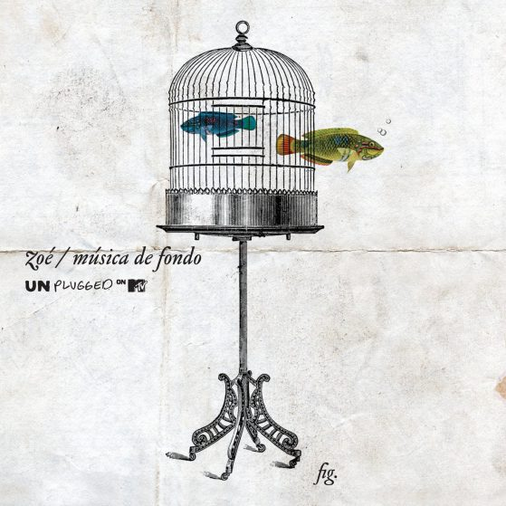

Fundada en el Distrito Federal, México, en 1997, Zoé es una banda de rock alternativo con influencias que van desde The Beatles y The Cure hasta Stone Roses y Placebo. La combinación de sonidos electrónicos, indie y blues le confieren un estilo característico que muchas veces impide encasillarlos en un género.
León Larregui en la voz, Sergio Acosta en guitarra, en los teclados Jesús Báez, en el bajo Ángel Mosqueda y Rodrigo Guardiola en la batería, conforman este emblemático grupo mexicano cuya evolución se mide a través de cada producción.
MTV Unplugged/Música de Fondo
